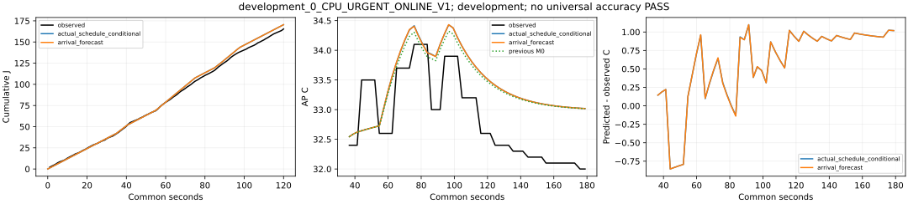
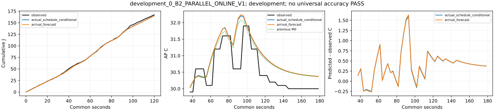
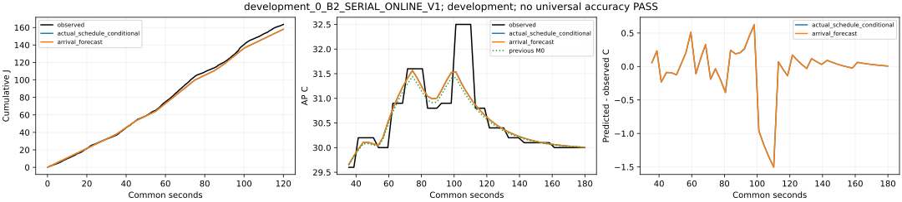
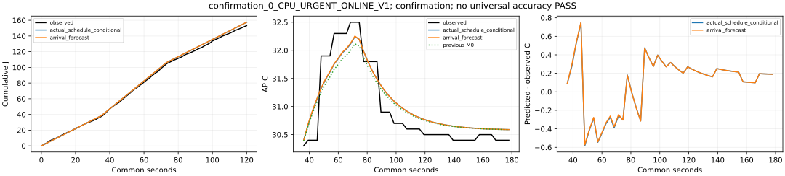
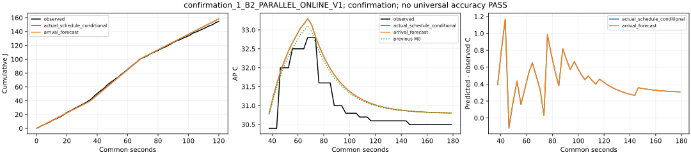
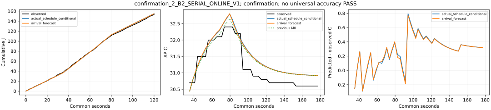
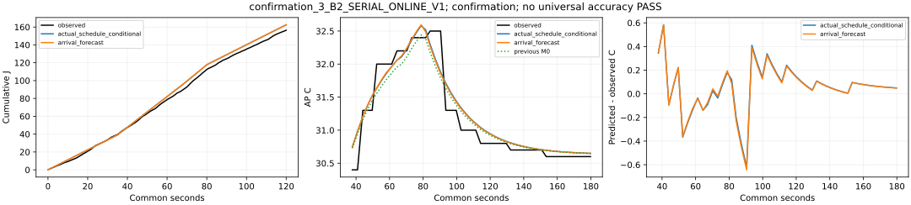
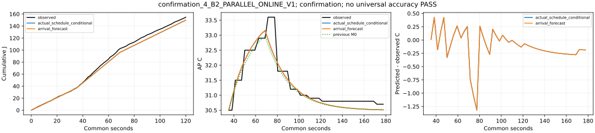
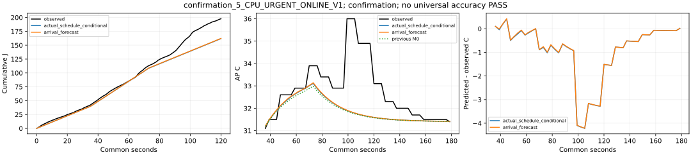

개발3과 확인6을 분리합니다. 확인은 정책별2회이며 독립 세션 변동성의 정밀 추정이 아닙니다. 부하 전 AP/전력은 허용 초기 입력이고 이후 관측값은 예측에 사용하지 않습니다. 실제 일정 조건부와 예정 도착 예측을 별도로 표시합니다. 전류 raw=mA 조건부, 절대 정확도 미인증. 기본/strict/experiment_ready=false 유지.
| id | phase | policy | prediction | observed_120s_j | predicted_120s_j | energy_signed_error_j | energy_relative_error | mae_c | max_absolute_error_c | peak_signed_error_c | signed_mean_c | actual_urgent_p95_ms | predicted_urgent_p95_ms | actual_deadline_met | planned | accuracy_pass |
|---|---|---|---|---|---|---|---|---|---|---|---|---|---|---|---|---|
| development_0_CPU_URGENT_ONLINE_V1 | development | CPU_URGENT_ONLINE_V1 | actual_schedule_conditional | 165.37282855503247 | 170.44016909851825 | 5.067340543485784 | 0.030641917343752052 | 0.7029066412920238 | 1.0984869935181223 | 0.3281709295692181 | 0.5735847198190327 | 2189.573541 | 2047.451926 | 54 | 96 | None |
| development_0_CPU_URGENT_ONLINE_V1 | development | CPU_URGENT_ONLINE_V1 | arrival_forecast | 165.37282855503247 | 170.44016909851825 | 5.067340543485784 | 0.030641917343752052 | 0.7033035752638346 | 1.09902956288974 | 0.3314927745306093 | 0.5735201614009254 | 2189.573541 | 2047.451926 | 54 | 96 | None |
| development_0_B2_PARALLEL_ONLINE_V1 | development | B2_PARALLEL_ONLINE_V1 | actual_schedule_conditional | 167.18804867729452 | 165.27369697772792 | -1.9143516995665948 | -0.011450290344985521 | 0.4440202625032399 | 1.6029745974892151 | 0.30297459748921796 | 0.39476667434279833 | 6475.719618 | 6002.685502 | 46 | 96 | None |
| development_0_B2_PARALLEL_ONLINE_V1 | development | B2_PARALLEL_ONLINE_V1 | arrival_forecast | 167.18804867729452 | 165.15698674494163 | -2.031061932352884 | -0.012148367951068254 | 0.4493062006391627 | 1.6368945946637155 | 0.3368945946637183 | 0.3985310983082908 | 6475.719618 | 6002.685502 | 46 | 96 | None |
| development_0_B2_SERIAL_ONLINE_V1 | development | B2_SERIAL_ONLINE_V1 | actual_schedule_conditional | 163.52817722263143 | 158.0037358391286 | -5.524441383502818 | -0.033782810261388185 | 0.22801888995556774 | 1.5017287860032553 | -0.9371149137303476 | -0.04499762789596905 | 6605.799079 | 6465.533331 | 29 | 96 | None |
| development_0_B2_SERIAL_ONLINE_V1 | development | B2_SERIAL_ONLINE_V1 | arrival_forecast | 163.52817722263143 | 158.00373583912855 | -5.524441383502875 | -0.03378281026138853 | 0.22859320967787952 | 1.5058040989673174 | -0.9292791661607716 | -0.044885413886992784 | 6605.799079 | 6465.533331 | 29 | 96 | None |
| confirmation_0_CPU_URGENT_ONLINE_V1 | confirmation | CPU_URGENT_ONLINE_V1 | actual_schedule_conditional | 153.14867253232086 | 157.4204924779317 | 4.271819945610844 | 0.027893287450528235 | 0.27212847696694387 | 0.7454114484998087 | -0.2581057287744173 | 0.09497897941544656 | 764.700003 | 750.254324 | 96 | 96 | None |
| confirmation_0_CPU_URGENT_ONLINE_V1 | confirmation | CPU_URGENT_ONLINE_V1 | arrival_forecast | 153.14867253232086 | 157.50273908346108 | 4.354066551140221 | 0.02843032511575527 | 0.270829669519102 | 0.7521484399921228 | -0.2461786756710751 | 0.09685235287963975 | 764.700003 | 750.254324 | 96 | 96 | None |
| confirmation_1_B2_PARALLEL_ONLINE_V1 | confirmation | B2_PARALLEL_ONLINE_V1 | actual_schedule_conditional | 154.80539744875236 | 158.2840175677544 | 3.478620119002045 | 0.02247092269604893 | 0.4352793419846547 | 1.1641403992725685 | 0.4929750317266297 | 0.43024920700653607 | 295.689542 | 286.608481 | 96 | 96 | None |
| confirmation_1_B2_PARALLEL_ONLINE_V1 | confirmation | B2_PARALLEL_ONLINE_V1 | arrival_forecast | 154.80539744875236 | 158.56384008180032 | 3.758442633047963 | 0.0242784986504891 | 0.43567834320917925 | 1.1724858930393083 | 0.4905617087535674 | 0.4312389144819996 | 295.689542 | 286.608481 | 96 | 96 | None |
| confirmation_2_B2_SERIAL_ONLINE_V1 | confirmation | B2_SERIAL_ONLINE_V1 | actual_schedule_conditional | 153.01501258926612 | 154.89385734998672 | 1.8788447607205967 | 0.012278826298984967 | 0.31354414111202583 | 0.7944364097475045 | 0.389985567671566 | 0.27482381956931096 | 867.260541 | 891.398341 | 61 | 96 | None |
| confirmation_2_B2_SERIAL_ONLINE_V1 | confirmation | B2_SERIAL_ONLINE_V1 | arrival_forecast | 153.01501258926612 | 154.76802624579764 | 1.7530136565315217 | 0.011456481471116085 | 0.31088725564903474 | 0.7711296973143824 | 0.4025441818854034 | 0.271632514910626 | 867.260541 | 891.398341 | 61 | 96 | None |
| confirmation_3_B2_SERIAL_ONLINE_V1 | confirmation | B2_SERIAL_ONLINE_V1 | actual_schedule_conditional | 156.45880859336532 | 162.52264262667308 | 6.0638340333077565 | 0.038756744269142385 | 0.1532920346388256 | 0.6210562030836506 | 0.08035399230873708 | 0.05622129433596206 | 896.028926 | 891.398341 | 61 | 96 | None |
| confirmation_3_B2_SERIAL_ONLINE_V1 | confirmation | B2_SERIAL_ONLINE_V1 | arrival_forecast | 156.45880859336532 | 162.46308158521387 | 6.004272991848552 | 0.038376062337618776 | 0.15117509828773437 | 0.6428246579528221 | 0.09471253675918234 | 0.0533545478848764 | 896.028926 | 891.398341 | 61 | 96 | None |
| confirmation_4_B2_PARALLEL_ONLINE_V1 | confirmation | B2_PARALLEL_ONLINE_V1 | actual_schedule_conditional | 154.77363961197238 | 149.74079815562766 | -5.032841456344727 | -0.032517433000621994 | 0.22657053036190367 | 1.3209586100070894 | -0.4520201523088403 | -0.1236302953861873 | 295.395386 | 286.608481 | 96 | 96 | None |
| confirmation_4_B2_PARALLEL_ONLINE_V1 | confirmation | B2_PARALLEL_ONLINE_V1 | arrival_forecast | 154.77363961197238 | 150.0369658062865 | -4.736673805685882 | -0.030603879430379958 | 0.2266319093708825 | 1.3148799694853608 | -0.44022809642718386 | -0.12125381018052868 | 295.395386 | 286.608481 | 96 | 96 | None |
| confirmation_5_CPU_URGENT_ONLINE_V1 | confirmation | CPU_URGENT_ONLINE_V1 | actual_schedule_conditional | 197.71272744433338 | 161.89366063079018 | -35.8190668135432 | -0.18116722821310616 | 0.9340727037311359 | 4.21955381028636 | -2.890815178738684 | -0.9043122931386373 | 751.005925 | 750.254324 | 96 | 96 | None |
| confirmation_5_CPU_URGENT_ONLINE_V1 | confirmation | CPU_URGENT_ONLINE_V1 | arrival_forecast | 197.71272744433338 | 162.21600018297715 | -35.49672726135623 | -0.1795368852586915 | 0.9266155389127934 | 4.212524644644471 | -2.8601923439960757 | -0.8955076162859524 | 751.005925 | 750.254324 | 96 | 96 | None |









개발3·확인6. CPU/PAR 마감96/96, SER61/96. 마지막CPU 부하 후 유휴 상승 미예측을 보존. 정확도 PASS·정책 절감 보장 없음, experiment_ready=false.
결과·오차·지원 범위·재현추가 요청·host 조회 급증 근거 없음. 원인 미확정, 모형 계수 불변. 수치 계산과 정책 선택을 분리했습니다.
새 PC 분석·사용 경계